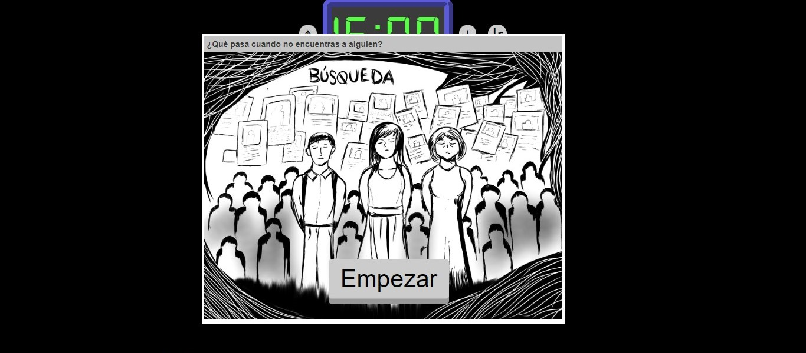
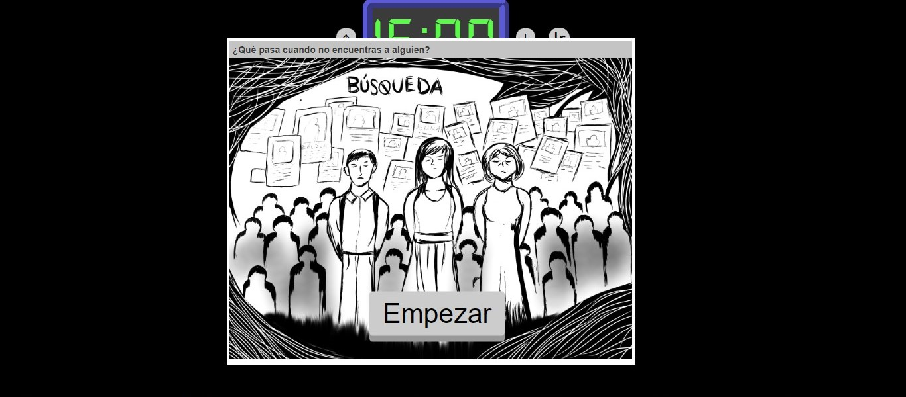

Sitios web
Parte de la formación de artista digital conlleva la exploración en la creación de Net art, un tipo de arte que existe en internet (sitios y paginas web) que busca la interactividad con el usuario, dicha exploración me ha llevado a colaborar en los siguientes proyectos.
BÚSQUEDA
Búsqueda (2023) es un sitio web en el cual el usuario navega entre historias, noticias, imágenes, sonidos e hipervínculos para descubrir una trágica historia de desaparición forzada, el proyecto visibiliza la inseguridad y violencia que vivimos día a día; la historia trata de una estudiante que al salir muy tarde de la escuela se afronta a dificultades que ponen en riesgo su integridad. El sitio web fue creado por la artista digital Ana Ofelia Gutiérrez P. con quien colabore en el argumento y las ilustraciones.
 


Visita el sitio web interactivo en: BÚSQUEDA
RESONANCIA
Es un proyecto que busca la reflexión sobre la importancia de las relaciones humanas en los salones de clases, tomando en cuenta que son espacios de convivencia en los que pasamos gran parte de nuestras vidas, el proyecto consto de hacer un intercambio de cartas con mensajes positivos y alentadores, en esta dinámica los destinatarios no sabían quien era el remitente, de esta manera se podía crear un espacio de confianza para fortalecer la comunicación, como obra final se grabo la reacción de los involucrados al leer los mensajes que se les envió, generando así un momento único y emotivo. El proyecto fue realizado en 2023 en colaboración con Arantxa Gabriela Serrano y Fernando Armin
Visita el sitio web en: RESONANCIA